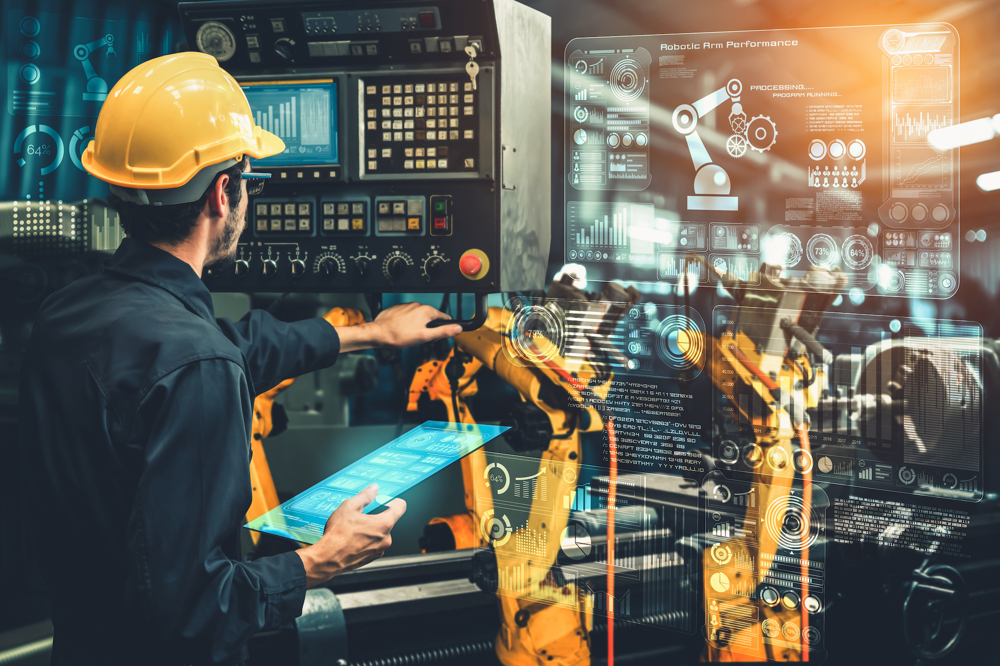

Automatización PLC & Mecánica Digital
Programación de controladores lógicos programables (PLC), control secuencial, actuadores neumáticos/eléctricos e instrumentación para maquinaria y líneas de proceso.
- Lógica Ladder (LD), Texto Estructurado (ST) y Diagrama de Bloques (FBD)
- Integración de interfaces HMI y sistemas SCADA locales
- Protocolos industriales: Modbus TCP/RTU, OPC-UA, MQTT, PROFINET
- Lazos de control PID y telemetría en tiempo real